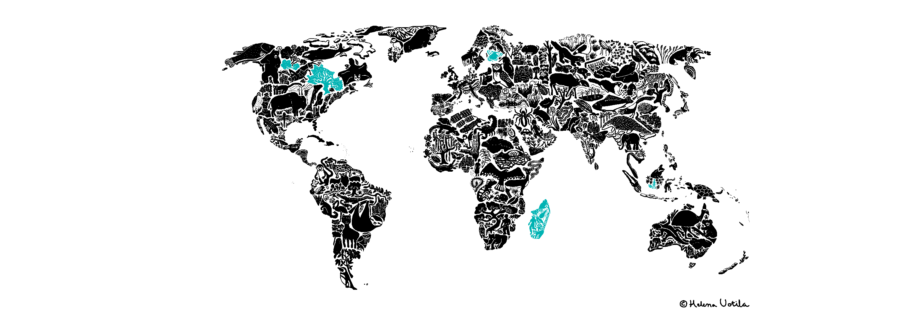
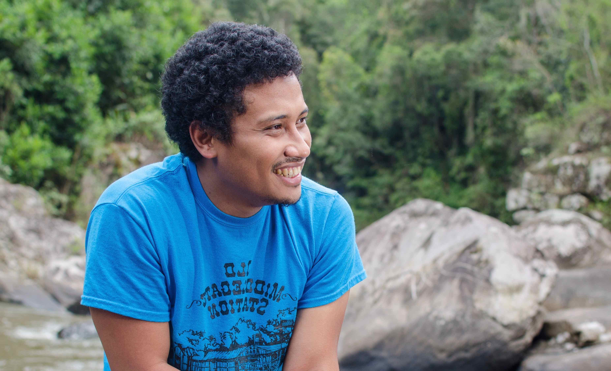

Theory at the service of conservation
About

I am a Malagasy ecologist and develop mathematical and statistical models to better understand patterns and processes of biodiversity loss. I obtained a MSc in applied mathematics with Arthur Randrianarivony at the University of Antananarivo. I did a PhD with Ilkka Hanksi and Otso Ovaskainen at the University of Helsinki. I completed a first postdoc with Emma Goldberg at the University of Minnesota, and a second postdoc with Anthony Ives and Monica G. Turner at the University of Wisconsin-Madison (ACES), and is doing a third postdoc with Benjamin Roche at the University of Montpellier on COVID-19 modeling. I am the Scientific Director of Madagascar Biodiversity Center since 2023, and a Honorary Fellow of the University of Wisconsin-Madison since 2019.
Research
Text in progress ...
Publications and in prep.
Published
- Ramiadantsoa, T., Amady, A., Phillipart, M., Tombozara. M, Lucas, V. & Fisher, B.L. (2026). Optimizing Black Soldier Fly Frass fertilizer rates for maize and soybean production in Madagascar. PLoS One 21(5): e0343378. DOI
- Andriambelo, F. F. H., Solofondranohatra, C. L., Ramiadantsoa, T. & Fisher, B. L. (2026).Field evaluation of composted black soldier fly frass as a soil amendment for restoration of Dodonaea madagascariensis (Sapindaceae) in Madagascar. Sustainability, 18(9), 4449;DOI
- Raharimandimby, T. M., Ramiadantsoa, T., Kelstrup, H. C., Hugel, S., Fisher, B. L. (2026). Effect of supplementing a cricket diet with cooked green beans, a discarded agro‑industrial material, on performance of Gryllus madagascarensis at two rearing densities. Insects, 17, 411. DOI
- Solofondranohatra, C. L., Ramiadantsoa, T., Hugel, S. & Fisher, B. L. (2025). Black soldier fly frass fertilizer outperform traditional fertilizers in terms of plant growth in restoration in Madagascar. Sustainability, 17(15), 7152.DOI
- Phelps, L. N., Razanatsoa, E., Davis, D., Hackel, J., Rasolondrainy, T., Tiley, G. P., …, Ramiadantsoa, T., …, Vorontsova, M. S., Douglass, K. & Lehmann, C. (2025). Advancing transdisciplinary research on grassy biomes to support resilience in ecosystems and livelihoods. Ecological Monographs, 95(2), e70011. DOI
- Kostandova, N., ..., Ramiadantsoa, T., ..., Wesolowski, A. (2024). A systematic review of using population-level human mobility data to understand SARS-CoV-2 transmission. Nature Communications, 15, 10504, DOI
- Rakotondrasoa, J. F., Ramiadantsoa, T. , Becker, L. J., Ravelomanana, A., Van Itterbeeck, J., Hugel, S. & Fisher, B. L. (2024). Education: an efficient tool to increase the willingness of children to consume farmed cricket in Madagascar. Journal of Insects as Food and Feed, 11(3), 455-468, DOI
- Rasoarimalala N. F., Ramiadantsoa, T. , Rakotonirina, J. C. & Fisher, B. F. (2024). Linear morphometry of male genitalia distinguishes the ant genera Monomorium and yllophopsis S (Hymenoptera: Formicidae) in Madagascar. Insects, 15(8), 605. DOI
- Solofondranohatra, C. L., Andrianorosoa, C. T. O., Ramiadantsoa.T, Ravelomanana, A., Ramanampamonjy, R. N., Hugel, S. & Fisher, B. L. (2024). Effect of Cricket Frass Fertilizer on growth and pod production of green beans (Phaseolus vulgaris L.). PLoS One, 19(5), e0303080. DOI
- Ramiadantsoa.T, Ratajczak, Z. & Turner, M. G. (2023). Regeneration strategies and forest resilience to changing fire regimes: insights from a Goldilocks model. Ecology, 104(6), e4041. DOI
- Evans, M. V., Ramiadantsoa.T, Kauffman, K., Moody, J., Nunn, C. L., Rabezara, J. Y., ... & Roche, B. (2023). Sociodemographic Variables Can Guide Prioritized Testing Strategies for Epidemic Control in Resource-Limited Contexts. The Journal of Infectious Diseases, 228(9), 1189-1197. DOI
- Twombly, S., Hastings, A., Miller, T., Cortez, M., Abbott, K., Ramiadantsoa.T, Blackwood, J., & Prosper, O. (2022). New Theory for Increasingly Tangled Banks. Issues in Science and Technology, 38(4), 39-44
- Rasambainarivo, F., Ramiadantsoa.T, Raherinandrasana, A., Randrianarisoa, S., Rice, B. L., Evans, M. V., Roche, B., Randriatsarafara, F. M., Wesolowski, A. & Metcalf, J. C. (2022). Prioritizing COVID-19 vaccination efforts and dose allocation within Madagascar. BMC Public Health, 22(1), 724. DOI
- Ramiadantsoa.T, Metcalf, C. J. E., Raherinandrasana, A. H., Randrianarisoa, S., Rice, B. L., Wesolowski, A., Randriatsarafara, F. M. & Rasambainarivo, F. (2022). Existing human mobility data sources poorly predicted the spatial spread of SARS-CoV-2 in Madagascar. Epidemics, 38, 100534. DOI
- Perrotti, A. G., Ramiadantsoa.T, O'Keefe, J. & Otaño, N. N. (2022). Uncertainty in coprophilous fungal spore concentration estimates. Frontiers in Ecology and Evolution, 10, 1086109. DOI
- Culbertson, K. A., Treuer, T. L. H., Mondragon-Botero, A., Ramiadantsoa, T. & Reid, J. L. (2022). The eco-evolutionary history of Madagascar presents unique challenges to tropical forest restoration. Biotropica, 54(4), 1081-1102. DOI
- Rice, B. L., ..., Ramiadantsoa, T., Rasambainarivo, F., Yu, W., Grenfell, B. T., Tatem, A. J. & Metcalf, C. J. E. (2021). Variation in SARS-CoV-2 outbreaks across sub-Saharan Africa. Nature Medicine, 27(3), 447-453. DOI
- Rasambainarivo, F., Rasoanomenjanahary, A., Rabarison, J. H., Ramiadantsoa, T., Ratovoson, R., Randremanana, R., Randrianarisoa, S., Rajeev, M., Masquelier, B., Heraud, J. M., Metcalf, C. J. E. & Rice, B. L. (2021). Monitoring for outbreak-associated excess mortality in an African city: Detection limits in Antananarivo, Madagascar. International Journal of Infectious Diseases, 103, 338-342. DOI
- Ramiadantsoa, T. & Solofondranohatra, C. L. (2021). Nontrivial responses of vegetation to compound disturbances: A case of Malagasy grassland. Malagasy Nature, 15, 29-40
- McCary, M. A., Phillips, J. S., Ramiadantsoa, T., Nell, L. A., McCormick, A. R. & Botsch, J. C. (2021). Transient top-down and bottom-up effects of resources pulsed to multiple trophic levels. Ecology, 102(1). DOI
- Kucharik, C. J., Ramiadantsoa, T., Zhang, J. & Ives, A. R. (2020). Spatiotemporal trends in crop yields, yield variability, and yield gaps across the USA. Crop Science, 60(4), 2085-2101. DOI
- Ramiadantsoa, T., Stegner, M. A., Williams, J. W. & Ives, A. R. (2019). The potential role of intrinsic processes in generating abrupt and quasi-synchronous tree declines during the Holocene. Ecology, 100(2). DOI
- Ratajczak, Z., Carpenter, S. R., Ives, A. R., Kucharik, C. J., Ramiadantsoa, T., Stegner, M. A., Williams, J. W., Zhang, J. & Turner, M. G. (2018). Abrupt Change in Ecological Systems: Inference and Diagnosis. Trends in Ecology & Evolution, 33(7), 513-526. DOI
- Ramiadantsoa, T., Hanski, I. & Ovaskainen, O. 2018. Responses of generalist and specialist species to fragmented landscapes. Theoretical Population Biology, 124, 31-40. DOI
- Ihantamalala, F. A., Rakotoarimanana, F. M. J., Ramiadantsoa, T., Rakotondramanga, J. M., Pennober, G., Rakotomanana, F., Cauchemez, S., Metcalf, C. J. E., Herbreteau, V. & Wesolowski, A. (2018). Spatial and temporal dynamics of malaria in Madagascar. Malaria Journal, 17(1), 58. DOI
- Ramiadantsoa, T., Sirén, J. & Hanski, I. (2017). Phylogenetic comparative method for geographical radiation. Annales Zoologici Fennici, 54(1-4), 237-257.DOI
- Ramiadantsoa, T., Ovaskainen, O., Rybicki, J. & Hanski, I. (2015). Large-scale habitat corridors for biodiversity conservation: A forest corridor in Madagascar. PLoS One, 10(7), e0132126. DOI
Submitted and in prep.
- Ramiadantsoa, T., Mansoni, A., Rakotovao K. E. P., Rakotoniana, M. M., Rakotonirina, J. C., Smargiassi, S., Palchetti, E., Santini, G., & Fisher, B. L. From grasslands to croplands: impacts of intensive agriculture on ant assemblages in Madagascar. Under review in Biodiversity & Conservation.
- DeAngelis, D., Blackwood, J., Gaoue, O. G., Howerton, E., Inamine, H., Feldman, O. P., Ramiadantsoa, T., Shea, K., Yeakel, J., Fortin, M‑J. New ecological theory to integrate internal ecological processes and external forces for systems in changing environments. In prep. for Ecology
- Andrianorosoa, C.T.O., Solofondranohatra, C., Ramiadantsoa, T., …, & Fisher, B. L. Cricket frass fertilizer promotes the survival, growth, and yield of zucchini (Cucurbita pepo). Under review in Plos one
- Rajohnson, S.M., Ramiadantsoa, T., Kelstrup, H., Andriamampionona, M. & Fisher, B.L. Corn bran supplementation improves black soldier fly (Hermetia illucens) rearing on invasive Opuntia stricta. Under review in Journal of Insect as Food & Feed.
- Ramiadantsoa, T., Nantenaina, R. H., Rakotoniaina, H. J., Rakotonirina, H., Rakouth, H., Ramahandrison, A. T., Ramananjato, V., Randimbiarison, F., Raselimanana, M., Razafimandimby, D. N. & Temba, E. M. Biodiversity decline in Madagascar: the elephant in the room? In prep for Biotropica.
- Ramiadantsoa, T. & Ives, A. R. Shaky ball vs. shaky cup: relationships between characteristic return and stability in variable environments. In prep for Ecology Letters.
Outreach
Text in progress...Contact & CV
My CV
Email: tanjona.ramiadantsoa-AT-gmail.com